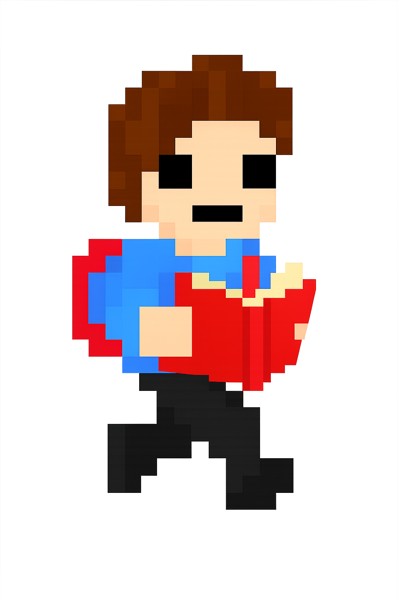

Mente Ativa
Este site foi criado para apresentar informações sobre jogos educacionais, destacando seus benefícios, desafios e exemplos já existentes. A proposta é ajudar os alunos a compreender melhor o conteúdo escolar, despertando o interesse pelos estudos por meio do uso dos jogos.
No botão "Leia mais", você poderá saber um pouco mais sobre mim, além de conhecer um projeto que estou desenvolvendo e outros planos futuros que pretendo realizar.
Sobre mim
Meu nome é Guilherme, tenho 18 anos e, enquanto desenvolvo este site, curso o técnico em Informática no Colégio Maria Rocha. Além de ser parte do meu Trabalho de Conclusão de Curso (TCC), este projeto também reflete minha curiosidade e interesse pelo tema dos jogos educacionais.
Desde pequeno, sempre ouvi que “jogos não ensinam nada”. Cresci com essa ideia na cabeça, mas, com o tempo, percebi o quanto os jogos podem, sim, ser uma poderosa ferramenta de aprendizado. Por isso, decidi provar que o lazer também pode ser uma forma de aprendizado.
A ideia principal do meu TCC é explorar jogos que utilizem diferentes maneiras de ensinar. A partir disso, pensei: “E se eu criasse o meu próprio jogo?” — e foi assim que surgiu o projeto.
No início, eu não imaginava o quanto desenvolver um jogo seria desafiador. Surgiram muitas ideias, mas percebi que nenhuma seria simples de realizar. Ainda assim, eu tinha certeza de que o conteúdo do jogo seria baseado no Exame Nacional do Ensino Médio (ENEM).
Criei então um jogo de quiz cronometrado, desenvolvido no GameMaker, que ajuda o jogador a simular o tempo real de prova, estimulando o raciocínio rápido e o aprendizado dinâmico. Apesar de alguns imprevistos, considero o projeto um passo importante na união entre jogos e educação.
Para planos futuros, eu tenho a ideia de não continuar na área de jogos, apesar de gostar muito desse campo. Eu simplesmente não me vejo trabalhando com isso profissionalmente. Em vez disso, quero focar em programação para back-end, que acabou se tornando quase um vício para mim. Gosto da sensação de fazer o sistema funcionar, resolver uma série de problemas e, no final, ver tudo rodando exatamente como deveria.